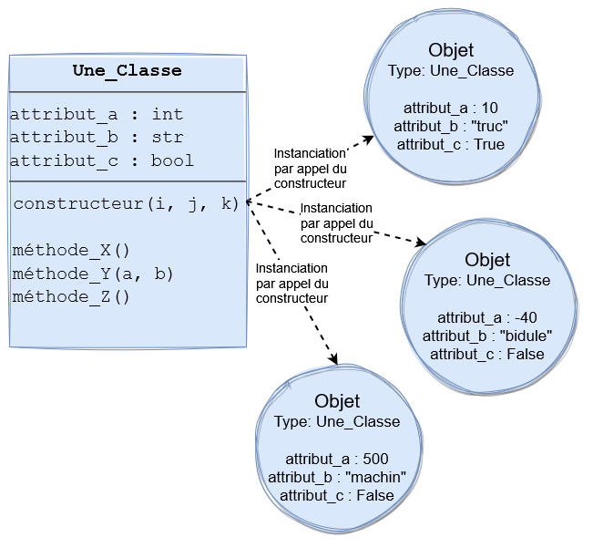
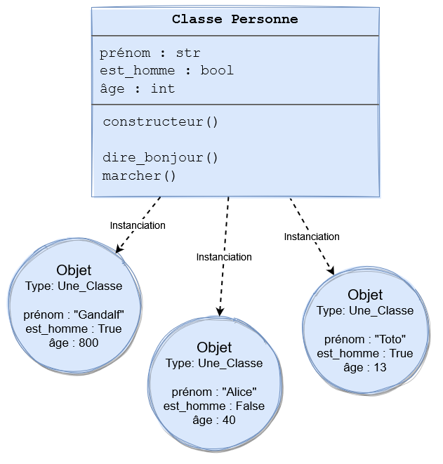

Programmation objets
Nous avons vu qu'en Python tout est objet et que tout objet a forcément un type qui décrit ses valeurs possibles. Voyons cela plus en détail.
La "programmation orientée objet", qu'on abrègera par POO, va nous servir pour créer de nouveaux types de données personnalisés. D'abord on déclarera nos types, on pourra ensuite créer et utiliser des objets de ces types.
Vue d'ensemble

En POO on utilise le terme "classe" pour désigner un type. Une classe est comme un modèle, un moule, qui contient le plan de chaque objet de ce type doit avoir. À partir de ce modèle, qui devient alors un type à part entière, on peut ensuite créer des objets de ce type, qu'on appelle alors "instances". On appelle "instanciation" ce processus de création d'objets à partir d'une classe, et c'est le "constructeur" de la classe qui permet l'instanciation.
Une classe est composée de 3 parties (l'ordre n'a pas d'importance) dont il faut bien respecter le vocabulaire, et les nommer par leur nom exact:
- des "attributs" : les variables internes que chaque objet aura et qui le décriront
- des "méthodes" : les fonctions chaque objet pourra utiliser et qui lui permettront d'agir sur lui-même et / ou d'autres objets
- un "constructeur" : une méthode (et donc une fonction) particulière, qui sert à produire des objets à partir de la classe
Schématiquement on a:
Prenons l'exemple d'une classe qui décrit une personne et à partir de laquelle on peut créer autant de personnes que nécessaire:
Classes
Concrètement une classe est un nouveau type qu'on déclare. En Python cela s'écrit:
# ↓ Déclare une nouvelle classe.
# Remarquez le M majuscule, le nom d'une classe commence par une majuscule
class MonNouveauType:
pass
Cette classe ne fait rien de spécial, mais elle existe. On démarre toujours en POO le nom d'une classe par une majuscule. C'est une convention. A part ça, son nom respecte les mêmes règles et limites que le nom des variables (pas d'espace, doit commencer par une lettre, pas de caractères autres que alpha-numériques et _). Maintenant on peut créer des variables de ce type:
# Crée une instance de la nouvelle classe
ma_variable = MonNouveauType()
On appelle la donnée vers laquelle pointe ma_variable un objet. Celui-ci est une instance de la classe
MonNouveauType. On appelle aussi instanciation la création d'un nouvel objet, du verbe instancier.
Attention à bien mettre les parenthèses MonNouveauType(), c'est comme ça qu'on appelle le constructeur, la classe s'appelle / s'execute /
s'invoque comme une fonction, et sa valeur de retour est une nouvelle instance d'elle-même. Une classe est comme un modèle à partir duquel on créé des
exemplaires spécifiques d'elle. Une instance est un exemplaire précis et concret de la classe, qui suit le modèle, mais a ses valeurs propres pour
chaque attribut que la classe définit.
Voici ce que ce code donne dans le modèle de données de Python:

Remarquez que la classe en elle-même est un objet de type "type", qu'elle est référencée par une variable qui a le même nom qu'elle, et que l'objet instancié est référencé par une variable également.
Méthodes
Les instances de notre classe ne peuvent rien faire, car elle est vide pour l'instant. Donnons-leur quelque chose à faire:
class MonNouveauType:
def dire_bonjour(self):
print("Bonjour")
On vient de créer une fonction dire_bonjour à l'intérieur de la classe, qui prend un paramètre au nom étrange self, qui
signifie "soi-même" en anglais. Cette fonction est une méthode. Une méthode sert à donner des actions possibles que nos objets pourront
effectuer, sur eux-mêmes et / ou sur d'autres données. Le paramètre "self" peut être techniquement nommé comme on veut mais on le nomme "self" par
convention, ne le nommez jamais autrement, mais doit obligatoirement être présent, et en tout premier paramètre de toute méthode. "self" sera
automatiquement renseigné par Python au moment de l'exécution de la méthode, et référencera l'objet sur lequel la méthode s'exécute. Elle s'utilise de
la façon suivante:
ma_variable = MonNouveauType()
# Appel de la méthode "dire_bonjour" de variable "ma_variable"
ma_variable.dire_bonjour()
On a appelé la méthode de l'objet ma_variable. Remarquez que le paramètre self n'est pas spécifié. Celui-ci est en fait la
variable ma_variable, mais au moment de l'appel, on ne le précise pas, cela est fait automatiquement pour nous.
On peut passer d'autres paramètres aux méthodes, et on peut également utiliser le paramètre self dans le corps de la méthode
class MonNouveauType:
def dire_bonjour(self, message):
print("self =", self)
print(type(self))
print("Bonjour", message)
ma_variable = MonNouveauType()
ma_variable.dire_bonjour("à tous")
self = <__main__.MonNouveauType object at 0x000001D1ACFF02C8>
<class '__main__.MonNouveauType'>
Bonjour à tousOn peut appeler des méthodes dans d'autres méthodes:
class MonNouveauType:
def methodeA(self):
print("Méthode A exécutée")
def methodeB(self):
print("Méthode B exécutée")
self.methodeA()
var1 = MonNouveauType()
var1.methodeB()
Méthode B exécutée
Méthode A exécutéeAttributs et constructeur
Chacun de nos objets, en plus de leurs méthodes, peuvent aussi avoir leurs propres données, qu'on appelle attributs ou variables d'instance. Celles-ci sont déclarées dans le constructeur de la classe:
class MonNouveauType:
def __init__(self):
self.un_attribut = "Salut"
def dire_bonjour(self, message):
print("self =", self)
print(type(self))
print("Bonjour", message)
ma_variable = MonNouveauType()
# On peut lire les attributs d'un objet
print(ma_variable.un_attribut) # Affiche "Salut"
# On peut aussi les modifier
ma_variable.un_attribut = "Coucou"
Le constructeur est unique dans chaque classe, c'est une méthode particulière qui a le nom __init__ (double _ de chaque côté),
qui prend aussi self en paramètre. Cette méthode est appelée à chaque fois qu'on crée une nouvelle instance, elle sert à l'initialiser. En
particulier, c'est dans le constructeur qu'on donne à l'objet ses attributs, qui sont des variables qui lui sont propres, attachées.
Le constructeur peut prendre d'autres paramètres que self, ce qui permet de configurer chaque objet au moment de leur création:
class MonNouveauType:
# Un constructeur peut avoir des paramètres autres que self
def __init__(self, un_prénom):
self.prénom = un_prénom
def dire_bonjour(self, message):
# On peut lire (et modifier) les attributs dans les méthodes
print("Bonjour", message, "! Je m'appelle", self.prénom)
var1 = MonNouveauType("Toto")
var2 = MonNouveauType("Adrien")
var1.dire_bonjour("à tous")
var2.dire_bonjour("tout le monde")
Bonjour à tous ! Je m'appelle Toto
Bonjour tout le monde ! Je m'appelle AdrienExemple
# On créé une classe pour décrire des personnages dans un jeu.
class Personnage:
# Le constructeur, on devra fournir le nom initial de chaque nouveau perso.
def __init__(self, nom_initial):
# Création de l'attribut "nom".
self.nom = nom_initial
# Création de l'attribut "points_vie".
self.points_vie = 100
# Méthode pour qu'un perso puisse s'afficher facilement dans la console
def afficher(self):
print("Nom perso=", self.nom, "PV:", self.points_vie)
# Méthode pour qu'un perso puisse attaquer un autre
def attaquer_perso(self, perso_cible):
perso_cible.points_vie -= 10
# ↓ Instanciation de différents persos,
# ↓ et appels de certaines de leurs méthodes.
joueur = Personnage("Ulysse")
joueur.afficher()
ennemi = Personnage("Cyclope")
ennemi.afficher()
joueur.attaquer_perso(ennemi)
ennemi.afficher()
marchand = Personnage("Marchand")
marchand.afficher()
ennemi.attaquer_perso(marchand)
marchand.afficher()
boss = Personnage("Big guy")
boss.afficher()